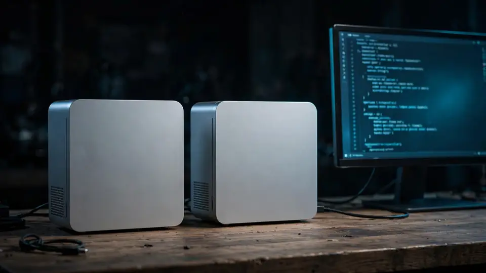

Meta releases Muse Spark Open: 816B open weights for agentic coding, tuned to run on two Mac Studios
Meta released the weights for Muse Spark Open on Thursday, calling it the most capable U.S. open-weight model to date: a natively multimodal model with 816 billion parameters (42 billion active) and a 1-million-token context window, built for coding and agentic work — and tuned with Apple to run on two M5 Ultra Mac Studios.
- 816 billion total parameters with only 42 billion active per token; reads text, images, video and audio; 1M-token context window.
- It is the open version of Muse Spark, the model family behind Meta's own Meta AI assistant; built for long multi-step tasks, tool use, and fixing real software bugs.
- Weights ship in two versions: full-precision BF16 at about 1.6TB, and a compressed NVFP4 build at roughly 530GB; AMD, Intel and Unsloth produced smaller formats down to ~2-bit files that run on a 256GB machine with llama.cpp.
- Meta worked with Apple to optimize it for the Mac Studio with M5 Ultra via MLX: up to 512 GB unified memory per machine, so two machines hold the entire model; the 1.2 TB/s memory bandwidth keeps token reads fast.
- Caveat: Apple hasn't released the 512GB Mac Studio yet (expected later this month); the 256GB model already costs over $10,000 — a two-machine setup is a five-figure proposition.
- Available through API platforms including Baseten, Fireworks AI, Groq, Modal, Nebius, OpenRouter, and Together AI; weights downloadable from Hugging Face, Amazon SageMaker AI (JumpStart), Google Cloud Model Garden, and Microsoft Foundry Models.
- Free to download under a license allowing limited commercial use; Mark Zuckerberg announced the release on X on October 15, 2026.
An 816B model built for agents
In a blog post quoted across today's coverage, Meta put it plainly: "Today, we're releasing the weights for Muse Spark Open, the most capable US open-weight model to date. Muse Spark Open is a natively multimodal model with 816B total parameters (42B active) and a 1M-token context window. Built for coding and agentic work, it excels at long-horizon tasks, complex software engineering, and multi-step reasoning."
The architecture is a mixture-of-experts design: 816 billion parameters in total, with only 42 billion active for each token. It reads text, images, video and audio, writes text, and holds a 1-million-token context window — enough to keep an entire project in view. Meta built it for coding and agent work: long multi-step tasks, tool use, and fixing real software bugs, according to the model card. It is the open version of Muse Spark, the model family behind Meta's own Meta AI assistant.
The weights ship in two versions: full-precision BF16 at about 1.6TB, and a compressed NVFP4 build at roughly 530GB. AMD, Intel and Unsloth have already produced their own smaller formats — down to roughly 2-bit files that Meta's developer guide says run on a 256GB machine with llama.cpp.
The Apple détente
The stranger half of the launch is who Meta built it with. Meta worked with Apple to optimize Muse Spark Open for the Mac Studio with M5 Ultra, leaning on the latest version of MLX — Apple's open-source array framework tuned for Apple silicon's unified memory architecture. MacRumors reports that Apple and Meta, which "often argue more than they work together," partnered on the tuning, and Meta's AI chief Alexandr Wang couldn't resist the framing: "We're excited for mommy and daddy to be playing nice again," he told Axios.
Meta's pitch for the pairing is specific: "Apple's unified memory architecture lets the M5 Ultra's integrated GPU use up to 512 GB per Mac Studio, so two machines can hold an entire model. And the chip's 1.2 TB/s of memory bandwidth is fast enough to read the small slice each token needs. The result is two Mac Studios behave like one supercomputer with a terabyte of unified memory." The company calls the combination "the best way to run a powerful model on your own desktop."
Meta says it tested a range of agentic workflows running entirely on-device using Muse Code powered by Muse Spark Open — including shipping real iOS changes to Ice Cubes, an open-source Mastodon client (bug fixes, new features, full build), and driving DaVinci Resolve end to end, with the model reviewing footage frame by frame to find the strongest moments and crop them vertically. Zuckerberg announced the release on X: "Muse Spark Open -- weights releasing today -- runs great on new Mac Studios thanks to work with @johnternus and Apple." Apple's John Ternus replied: "Congrats to the team! Amazing to run a model of Muse Spark Open's caliber and scale this efficiently, right from your desk. Mac Studio keeps pushing the boundaries of on-device AI!"
One catch: Apple hasn't actually released the 512GB Mac Studio yet — it's expected later this month, and the 256GB model already costs over $10,000. A two-machine, terabyte-of-memory desktop setup is a five-figure proposition before you've downloaded a single weight.
Where to get it
The model is available through API platforms including Baseten, Fireworks AI, Groq, Modal, Nebius, OpenRouter, and Together AI, with weights downloadable from Hugging Face, Amazon SageMaker AI (one-click via JumpStart), Google Cloud Model Garden, and Microsoft Foundry Models. It's free to download under a license allowing limited commercial use.

Why it matters
The timing is deliberate. Muse Spark Open arrives just days after Meta's closed frontier push — and "most capable U.S. open-weight model to date" is, as RuntimeWire notes, Meta's claim rather than an independently established result. But the shape of the release tells its own story: frontier-class open weights, aimed squarely at agentic coding, that run on a desktop instead of a cluster. If agents are the workload everyone is fighting over, Meta just put the heaviest open-weights contender for that workload within reach of a (very well-funded) desk.
Sources: Meta's official announcement, quoted by 9to5Mac (Oct 15, 2026); MacRumors (Oct 15, 2026); MadRobot (Oct 15, 2026); RuntimeWire (Oct 15, 2026).
Frequently asked questions
What is Muse Spark Open?
Meta's open-weight release of its Muse Spark model family: 816B total parameters (42B active per token), natively multimodal, with a 1M-token context window, built for coding and agentic work — which Meta calls “the most capable US open-weight model to date.”
Can it really run on two Mac Studios?
Meta optimized it with Apple via MLX for the M5 Ultra Mac Studio: each machine's unified memory architecture gives the GPU up to 512 GB, so two machines hold the whole model, and the chip's 1.2 TB/s memory bandwidth handles token reads. Apple hasn't released the 512GB model yet, though — and the 256GB already costs over $10,000.
Where can I get the model?
Weights are on Hugging Face, Amazon SageMaker AI (one-click via JumpStart), Google Cloud Model Garden, and Microsoft Foundry Models; API access is available through Baseten, Fireworks AI, Groq, Modal, Nebius, OpenRouter, and Together AI.